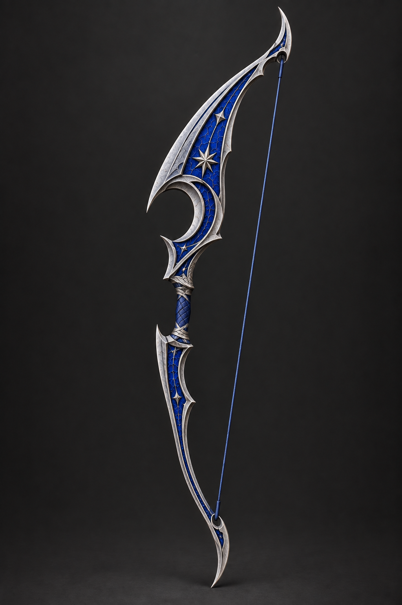
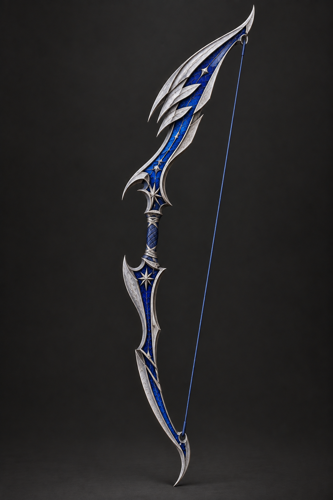
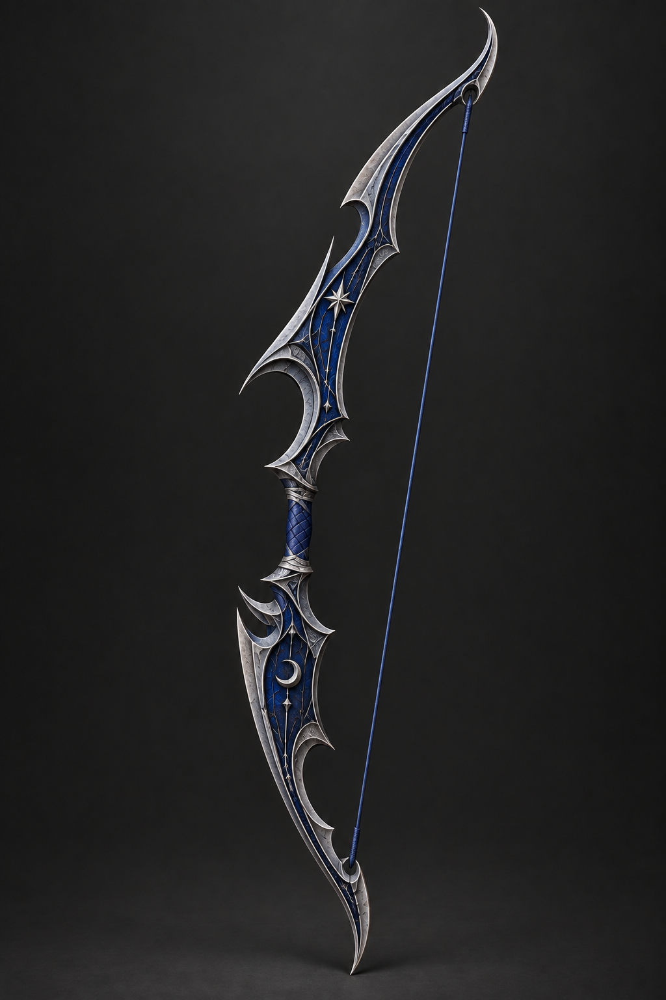
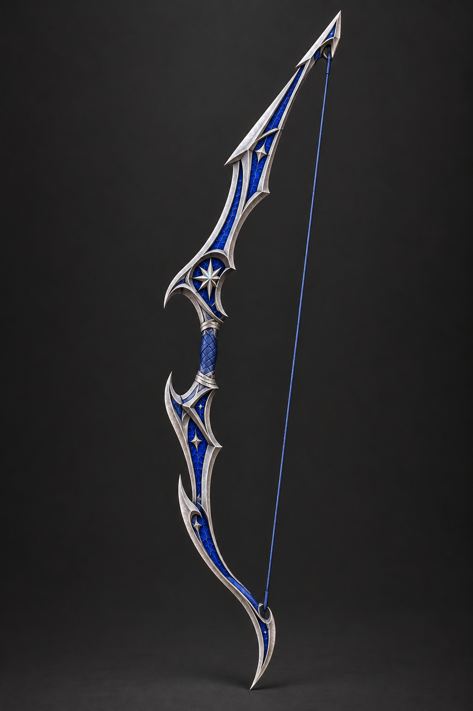
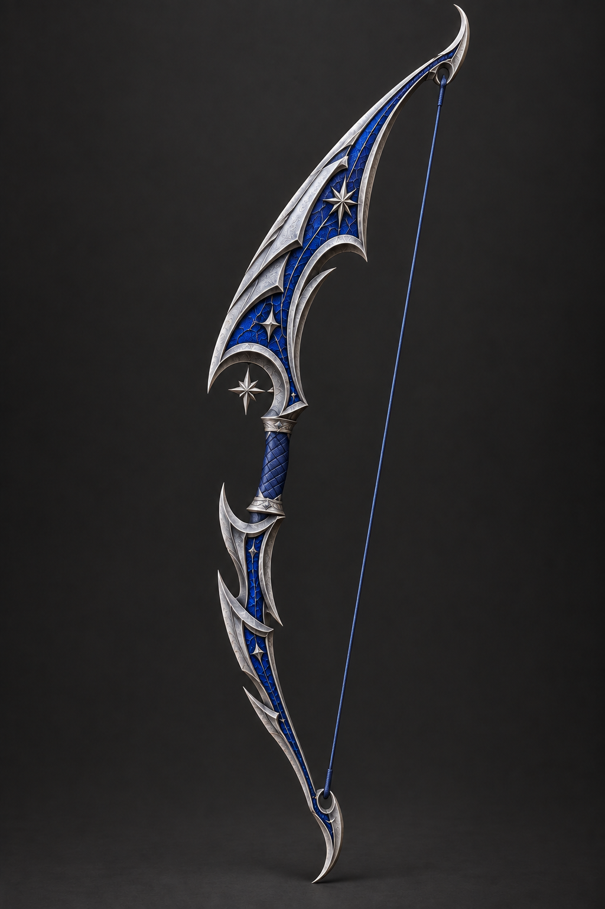

은색 금속과 청색 인레이를 유지하고, 상·하단의 길이와 장식 무게를 다르게 구성했습니다.이미지를 누르면 원본 크기로 볼 수 있습니다. 2026.09.22 · ImageGen

윗부분에 큰 초승달 면적을 주고 아래는 가늘게 정리한 형태. 지팡이와 세트감이 가장 강합니다.

위쪽으로 뻗는 겹날개 장식과 날렵한 하단. 기사 무기의 공격적인 인상이 잘 드러납니다.

어두운 청색과 가시 모양의 금속 테두리. 하단에도 갑주 면적을 둔 묵직한 형태입니다.

곧고 뾰족한 창날 같은 상단과 굽은 하단의 대비. 실루엣이 간결하고 날카롭습니다.

길게 휘는 뿔과 비늘 장식을 추상화한 형태. 곡선의 흐름과 위쪽 장식에 힘을 줬습니다.